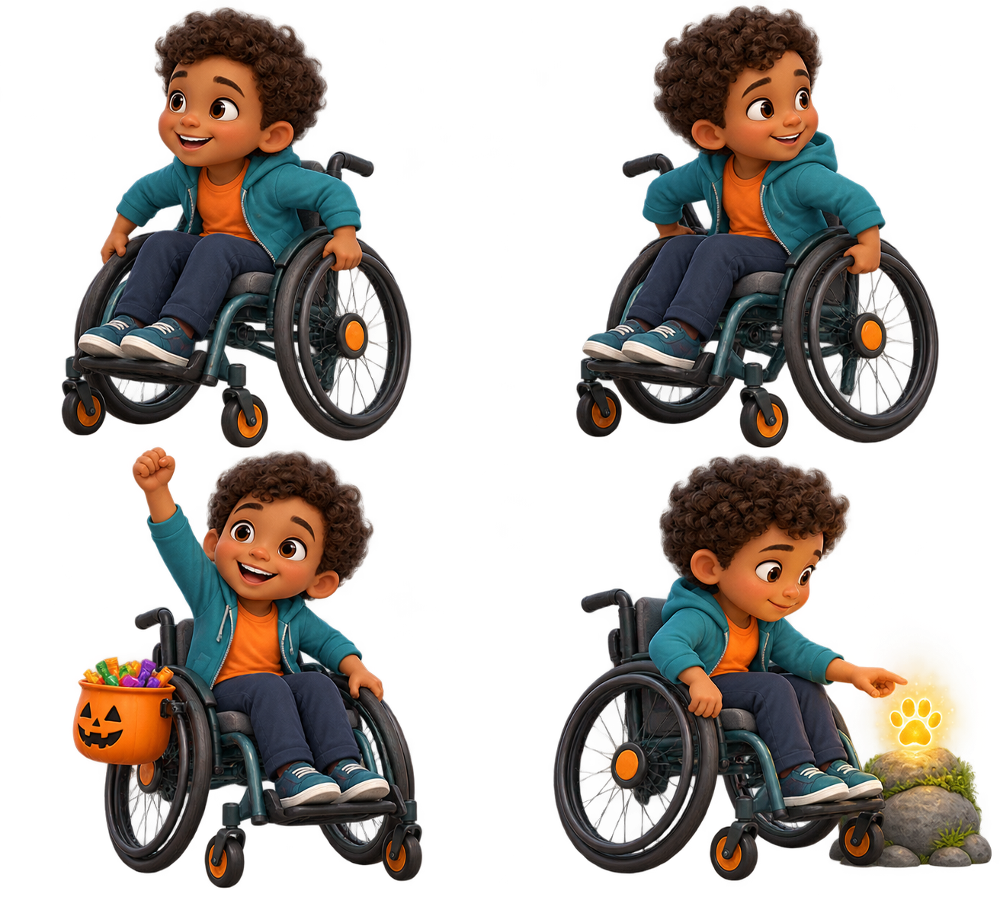

A special Halloween
Maya took an empty treat bucket and made their way to the open door. Noodle was waiting outside.
Direction: preserve the full chair silhouette and step-free route; do not substitute a standing pose.Internal visual review · synthetic child profile
Four movement-neutral story moments using one consistent seated character and one consistent wheelchair.
Ages 5–6 · about average height · short dark curls · wheelchair
The teal hoodie, orange shirt, navy trousers, dark-teal chair frame, gray seat, orange hubs, footplate, large wheels, and front casters must remain visible and consistent.

Maya took an empty treat bucket and made their way to the open door. Noodle was waiting outside.
Direction: preserve the full chair silhouette and step-free route; do not substitute a standing pose.Maya and Noodle joined the crowd near the giant pumpkin lantern. Together, they watched the Monster Star glow.
Direction: keep an accessible clear route and the same chair colors, wheels, casters, and footplate.Maya and Noodle led the parade beneath the glowing stars. The treat bucket rode safely beside Maya.
Direction: show equal participation; the bucket is attached without hiding the chair or changing seated proportions.Maya followed Noodle along the wide garden path, then paused beside the warm golden clue.
Direction: no stairs or narrow barriers; preserve the same wheelchair and seated child identity.